CAHAL
Cross-platform audio hardware abstraction library
Main Page
Data Structures
Files
Data Structures
Data Structure Index
Class Hierarchy
Data Fields
Class Hierarchy
Go to the textual class hierarchy
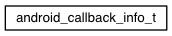
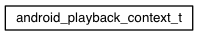
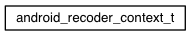
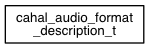
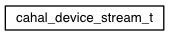
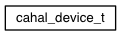
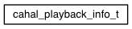
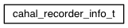
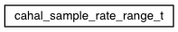
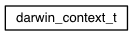
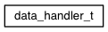
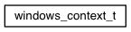
Generated on Fri Apr 1 2016 09:45:22 for CAHAL by
1.8.10
 1.8.10
1.8.10